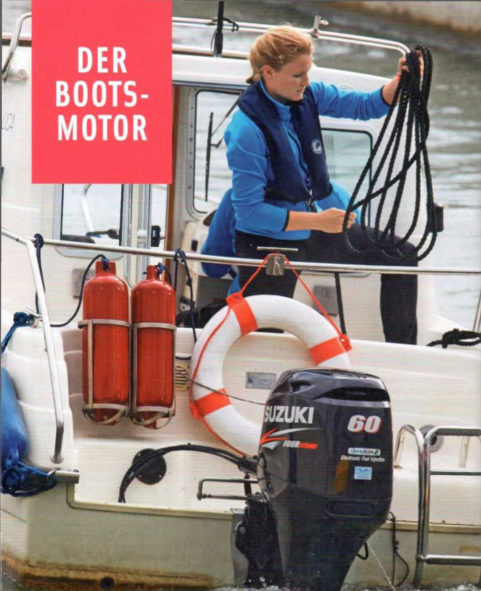
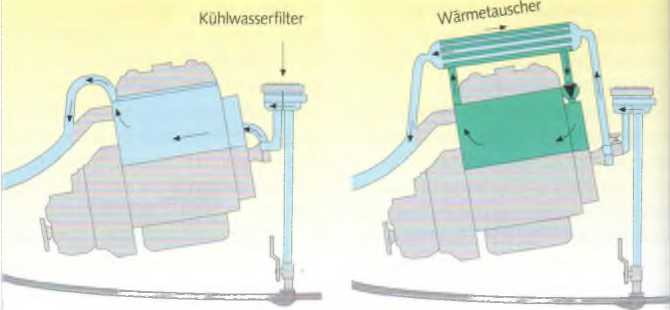
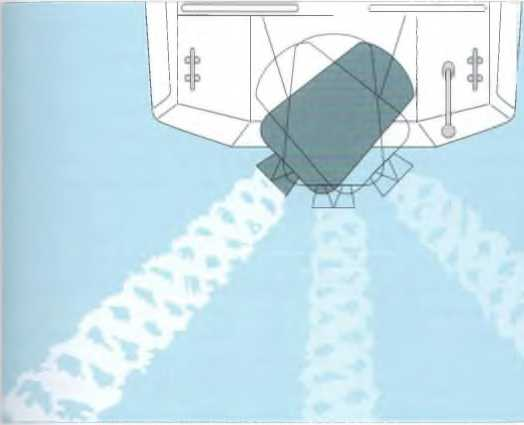

Среди лодочных двигателей различают бензиновые (двигатели Отто) и дизельные двигатели. Бензиновые двигатели всасывают через карбюратор бензино‑воздушную смесь, которая воспламеняется электрической свечой зажигания.
Дизельные двигатели всасывают только воздух. При сильном сжатии он нагревается настолько, что впрыскиваемое дизельное топливо самовоспламеняется. Поэтому у дизельного двигателя нет карбюратора и электрической системы зажигания, а вместо этого используется топливный насос и форсунка.
► Преимущества дизеля: более высокая взрывобезопасность, меньшая требовательность к обслуживанию из‑за меньшего количества чувствительных деталей, более долгий срок службы и меньший расход топлива.
► Недостатки дизеля: более высокая цена, больший вес и большие габариты установки по сравнению с бензиновым двигателем той же мощности.
► Недостатки бензинового двигателя: постоянная опасность пожара и взрыва. Хотя при аккуратной установке всей системы, включая топливный бак, этот риск можно значительно снизить.

Важно для машинного отделения: хороший доступ для проверки и обслуживания.
Среди бензиновых двигателей различают двухтактные и четырехтактные. Сегодня двухтактные двигатели встречаются в основном только на рынке подержанной техники, поскольку при новых регистрациях они больше не соответствуют нормам по выбросам.
Проще говоря, чтобы поршень в цилиндре двигался, требуется четыре рабочих такта. Бензино‑воздушная смесь должна быть всосана, сжата, сгореть и затем отработанные газы должны быть удалены. В четырехтактном двигателе поршень для этого делает четыре хода — вниз‑вверх‑вниз‑вверх. В двухтактном двигателе для той же работы требуется только два хода — вниз‑вверх. Основное различие:
► Двухтактные двигатели работают на смеси бензина и масла, которая обеспечивает смазку.
► Четырехтактные двигатели сжигают чистый бензин. Масло находится в отдельном картере и подается масляным насосом ко всем смазываемым деталям. Для четырехтактных двигателей требуется контроль уровня масла и периодическая его замена.
► Преимущества двухтактного двигателя: меньшие габариты и вес, большая мощность при одинаковом рабочем объеме.
► Преимущества четырехтактного двигателя: меньший расход бензина и масла, оптимальная смазка двигателя, более тихая работа и меньший вред для окружающей среды.

Подвесной мотор — единственно возможный тип привода для небольших спортивных лодок длиной примерно до 5 м. Его выгодное соотношение мощности и веса (кг/кВт или кг/л.с.) недостижимо для стационарных двигателей. Если модель лодки предлагается как с внутренним, так и с подвесным двигателем, то с менее мощным подвесным мотором она часто будет быстрее и экономичнее. Подвесные моторы выпускаются мощностью от 1,5 до 410 кВт (2–557 л.с.): малые моторы с ручным запуском, более мощные — с электрическим стартером.
Двигатель должен быть установлен на транце так, чтобы антикавитационная плита над винтом находилась немного ниже уровня днища лодки. Это предотвращает подсасывание воздуха винтом. Ни в коем случае антикавитационная плита не должна находиться выше днища. В противном случае винт будет захватывать воздух, а насос охлаждающей воды может захватить воздух, что приведет к перегреву двигателя.
Фиксатор механизма наклона под скобой наклона должен быть заблокирован, иначе при запуске шнура стартера или при движении назад вал может резко подняться.
Так как небольшие подвесные моторы иногда не имеют блокировки включенной передачи, при запуске обязательно убедитесь, что рычаг стоит в положении нейтрали. Проверяйте охлаждающую воду, которая выходит тонкой струей из контрольного отверстия на корпусе.
Перед поднятием и хранением подвесного мотора отсоедините топливный шланг и дайте двигателю поработать, пока он не остановится. Тогда карбюратор и поплавковая камера будут пустыми, и бензин не будет вытекать из карбюратора в воду или в лодку.
При транспортировке и хранении подвесного мотора его головка (верхняя часть) никогда не должна находиться ниже вала редуктора. Иначе оставшаяся охлаждающая вода может попасть в цилиндр и вызвать серьезные повреждения.

Quick‑Stop — обязательное устройство для каждого водителя лодки с подвесным мотором. Прикрепленный шнур соединяет водителя с выключателем двигателя. Если водитель падает за борт, зажигание немедленно отключается и двигатель сразу останавливается.
Правильный угол установки двигателя
Двигатель слишком сильно откинут назад. Корма вдавливается в воду, нос поднимается. Часть тяги винта направлена вниз. Кроме того, ухудшается управляемость лодки.
Двигатель слишком сильно прижат к транцу. Корма поднимается, а нос вдавливается в воду. Часть тяги винта направляется в дно лодки. Лодка может «врезаться» носом в волну и захлестнуться водой.
Оптимальный угол установки при глиссировании. Гребной винт может полностью преобразовать свою мощность в поступательное движение. Лодка почти скользит по воде и достигает максимальной скорости при наименьшем расходе топлива.
С помощью отверстий трима (3–5) в секторе на скобе наклона можно изменять угол установки вала подвесного мотора. Он должен быть установлен так, чтобы при глиссировании вал находился в воде под прямым углом. Только тогда винт может полностью использовать свою тягу. Обычно оптимальным оказывается третье отверстие снизу. Часто оптимальная настройка указана в инструкции по эксплуатации двигателя, но она не может быть одинаковой для всех лодок с разной загрузкой.
Если двигатель слишком сильно откинут от транца, корма погружается глубже в воду. Это увеличивает так называемую смоченную поверхность корпуса и повышает сопротивление воды. Расход топлива может увеличиться до 12%.
Аналогичный отрицательный эффект возникает, если вал двигателя слишком сильно прижат к транцу. Тогда винт тратит часть своей тяги на подъем кормы, в то время как нос лодки «пашет» воду.
Однако возможности трима можно использовать и положительно. Например, если тяжелый груз — канистры с топливом — находится в корме, прижатый к транцу двигатель поднимет погруженную корму, и лодка снова примет горизонтальное положение.
И наоборот: если тяжелый груз находится в носу — например, полный встроенный топливный бак — более откинутый двигатель поднимет нос до горизонтального положения.
Передача мощности от двигателя через вал к гребному винту почти всегда осуществляется с помощью механического редуктора. Лишь изредка и только на больших яхтах используются гидравлические передачи, однако их потери мощности довольно высоки. Обычный лодочный редуктор — это так называемый реверсивный редуктор. Изменяя направление вращения винта, он позволяет лодке двигаться вперед или назад.
Другие функции редуктора: отключение винта (нейтраль) и обычно понижение высокой частоты вращения двигателя до более низкой частоты вращения винта.
У подвесного мотора приводной вал проходит вертикально через стойку и через коническую передачу приводит в движение расположенный под прямым углом вал гребного винта.

Пример внутреннего двигателя с Z‑приводом

У Z‑привода (Aquamatic) внешний агрегат соединен с приводным валом двойным карданным шарниром. В верхней части стойки вращение один раз поворачивается под прямым углом, а внизу через коническую передачу передается на вал гребного винта. Из‑за этих двух поворотов под прямым углом агрегат и получил свое название.
Управление осуществляется поворотом Z‑привода (аналогично подвесному мотору). Поэтому маневренность значительно лучше, чем у жесткого вала с рулем.
Спортивные лодки с внутренним двигателем обычно оснащаются Z‑приводом (за редкими исключениями). Они подходят для лодок длиной примерно до 12 м.
В традиционной валовой установке коленчатый вал двигателя, реверсивный редуктор и вал гребного винта расположены на одной линии.
При V‑приводе приводной вал и вал винта образуют острый угол и направлены в противоположные стороны.
Поворот осуществляется с помощью карданных шарниров или конических передач и двух шестерен. Благодаря этому двигатель может быть установлен над винтом или даже за ним, что может быть необходимо по конструкционным или компоновочным причинам. В обоих случаях говорят о жестком валу. Такие установки целесообразны и необходимы на яхтах длиной более 12 м.
При водометном приводе (jet‑drive) отсутствуют реверсивный редуктор, винт и руль. Двигатель приводит во вращение рабочее колесо насоса. Через канал в днище лодки вода засасывается, ускоряется и под высоким давлением выбрасывается через сопло. Управление осуществляется отклонением струи с помощью дефлектора.
Для движения назад струя направляется вперед под днище лодки, и тяга меняет направление. Управление лодкой с водометным приводом значительно отличается от управления винтовой лодкой. Его КПД относительно ниже по сравнению с винтом. Поэтому такие приводы используются главным образом на спасательных и аварийных судах, поскольку под днищем лодки нет выступающих деталей, которые могли бы повредиться или травмировать человека.
Сальниковая коробка на жестком валу предотвращает попадание воды в лодку через вал гребного винта. Набивка сальника, прижимающаяся к вращающемуся валу, должна быть отрегулирована так, чтобы вал не работал полностью всухую, но и чтобы через нее просачивалось как можно меньше воды. Обычно набивка смазывается через пресс‑масленку. В современных установках применяется водосмазываемое самоуплотняющееся манжетное уплотнение.

При однорычажном управлении одновременно управляются газ и редуктор. Поскольку переход из переднего хода в задний или наоборот всегда проходит через нейтраль, серьезные ошибки переключения практически исключены. При двухрычажном управлении газ и редуктор разделены. Перед переключением необходимо убрать газ. Переключение выполняется только на холостом ходу, иначе редуктор быстро изнашивается. Двухрычажные системы уже много лет не устанавливаются на новые лодки и встречаются только на некоторых подержанных судах.

Как и большинство подвесных моторов, почти все стационарные судовые двигатели охлаждаются водой, поскольку на борту яхт практически невозможно обеспечить необходимое количество охлаждающего воздуха для воздушного охлаждения. В принципе различают одноконтурную и двухконтурную системы охлаждения.
При одноконтурной системе охлаждения — также называемой прямым охлаждением — насос постоянно прокачивает забортную воду через охлаждающий контур двигателя и выхлопной системы.

Принцип одно- и двухконтурной системы охлаждения: морская вода (синий цвет) проходит через систему охлаждения (слева). Морская вода проходит через теплообменник и охлаждает пресную воду (зелёный цвет) внутреннего контура.
При двухконтурной системе охлаждения двигатель подключён к замкнутому контуру пресной воды, который охлаждается в теплообменнике, через который проходит забортная вода.
► Преимущество: двигатель может работать в более благоприятном температурном диапазоне и, следовательно, экономичнее. Срок его службы увеличивается. При неисправности — например, отказе насоса или засорении заборного клапана — температура повышается медленно, и двигатель обычно можно вовремя остановить.
► Недостаток: требуется больше места и второй насос.
Подвесные моторы и Z‑приводы засасывают охлаждающую воду через свою колонку и затем отводят её вместе с выхлопными газами через выхлопной канал.

Существуют 2‑, 3‑ и 4‑лопастные гребные винты. Двухлопастные чаще всего используются только на небольших подвесных моторах, а четырёхлопастные — на тяжёлых яхтах.
В так называемой системе Duo‑Prop два винта, вращающиеся в противоположных направлениях, расположены один за другим на одном валу. Благодаря этому повышается эффективность Z‑привода.

На гребном винте обычно указываются параметры, например 9½ × 8 (дюймов) или 255 × 240 (мм).
Первое число обозначает диаметр винта — диаметр окружности, которую описывают концы лопастей при одном обороте.
Второе число обозначает шаг — расстояние, которое винт прошёл бы за один оборот в твёрдой среде, подобно шурупу в дереве. Винты различного диаметра могут иметь одинаковый шаг и наоборот.
Правильный диапазон оборотов указывается производителем двигателя.
Повреждённые винты необходимо немедленно заменять. Иначе не только снижается их эффективность и увеличивается расход топлива, но они также могут вызвать повреждения редуктора.

Если гребной винт, если смотреть сзади при движении лодки вперёд, вращается вправо (по часовой стрелке), он считается правого хода.
Винт, который при движении вперёд вращается влево, называется левым.
Поскольку при движении назад направление вращения винта меняется, правый винт тогда вращается влево, а левый — соответственно вправо.
Понятия «правого хода» и «вращающийся вправо» не являются полностью одинаковыми. Моторные лодки почти всегда имеют правые винты. Это важно знать при маневрировании лодками с жёстким валом. Моторные яхты с двумя двигателями обычно имеют левый винт слева (по левому борту) и правый винт справа (по правому борту). Реже встречается схема с винтами, направленными внутрь.
Гребной винт создаёт не только желаемую тягу вперёд. Он также слегка смещается в сторону, словно катится как колесо по грунту. Поэтому это явление называют «эффектом колеса». При этом винт смещает корму в свою сторону, а нос поворачивается в противоположную.
► Правый винт при движении вперёд слегка уводит корму вправо.
Лодка при этом немного отклоняется влево от курса. У левого винта поведение противоположное. При движении назад эффект возникает в обратном направлении и выражен сильнее.
На подвесных моторах и Z‑приводах этот эффект можно частично или полностью компенсировать регулируемым трим‑плавником на кавитационной плите.
При использовании противоположно вращающихся винтов на яхтах с двумя двигателями эффект полностью компенсируется.
В принципе различают две совершенно разные системы управления: управление с помощью винта (поворотом двигателя) и управление рулём. Лодки с подвесным мотором или Z‑приводом управляются непосредственным изменением направления тяги винта. Корма поворачивается туда, куда толкает винт при движении вперёд или тянет при движении назад. Поэтому такие лодки очень манёвренны на ограниченном пространстве. Руля у них нет.
Недостаток: чем медленнее движется лодка, тем хуже она управляется. При выключенном винте управление практически отсутствует.
У стационарных установок с жёстким валом для управления используется руль, расположенный позади винта. Поток воды от винта давит на руль и отклоняет корму в противоположную сторону. Поэтому управление иногда бывает затруднено.
Преимущество: пока лодка движется через воду, руль остаётся эффективным — даже при выключенном винте.

Поворотный винт
Лодки с подвесным мотором управляются поворотом всего двигателя. Лодки с Z‑приводом — поворотом всей кормовой колонки. При повороте влево тяга винта толкает корму вправо (к правому борту). При движении назад происходит обратное действие.

Жёсткий вал с рулём
Рулевое перо отклоняется в поток воды от винта. Возникающее давление смещает корму в противоположную сторону. Однако отклонение кормы меньше, чем у поворотного винта. Поэтому радиус разворота у лодки с жёстким валом примерно вдвое больше. Исключение — яхты с двумя двигателями: включая один двигатель вперёд, а другой назад, можно развернуться на месте. При движении назад поток от винта направлен вперёд. Руль реагирует только на движение лодки через воду, поэтому эффективность управления значительно снижается.

Поскольку вытекающий бензин в сочетании с воздухом образует чрезвычайно взрывоопасную смесь, к топливной системе предъявляются высокие требования безопасности.
► Заливная горловина на палубе должна быть полностью герметичной, чтобы пролитое топливо не попадало под палубу.
► Вентиляция бака должна быть выведена наружу за борт так, чтобы пары топлива не попадали внутрь лодки. Желательно наличие искрогасителя.
► Вся топливная система, включая заливную горловину, должна быть заземлена.

Переносной бак подвесного мотора. Обычно вмещает около 25 литров
Дизельные баки нельзя полностью опустошать, иначе в систему попадёт воздух и двигатель остановится. Удаление воздуха из системы занимает много времени и довольно сложно.
Баки подвесных моторов переносные. Быстроразъёмное соединение соединяет гибкий шланг с двигателем. Перед запуском резиновой грушей в карбюратор подкачивается топливная смесь. Бак должен быть закреплён и защищён от опрокидывания. У большинства баков подвесных моторов есть вентиляционный винт. Его необходимо открыть перед запуском двигателя и снова закрыть, если двигатель долго не используется. Некоторые баки имеют автоматическую вентиляцию.
Большинство взрывов происходит сразу после заправки, когда в лодке уже скопились пары бензина. Поэтому при заправке:
После заправки:
Переносные баки подвесных моторов из‑за паров бензина нельзя заполнять или переливать на борту.
Если бензин попал в трюм, его нужно удалить тряпками или ручным насосом, после чего промыть трюм водой.
Установки сжиженного газа (бутан, пропан) пользуются на борту растущей популярностью. Поскольку эти газы в смеси с воздухом чрезвычайно взрывоопасны, правильная установка имеет большое значение. Установка и газовые баллоны должны соответствовать стандарту DIN EN ISO 10239 и «Техническим правилам для установок сжиженного газа на моторных яхтах и парусных лодках» (рабочий лист G 608). Они разработаны Немецким объединением специалистов газового и водного хозяйства (DVGW) и Немецким союзом сжиженного газа (DVFG). Первичный ввод установки в эксплуатацию допускается только в присутствии квалифицированного установщика, который проверяет трубопроводы и соединения на герметичность. Проверка должна проводиться каждые два года. Свидетельство о правильной установке должно храниться на борту.
 Отсек для газовых баллонов
Отсек для газовых баллонов
► Разрешается устанавливать только приборы (плиты и т.п.) с исправным устройством контроля пламени.
► После использования всегда закрывать все краны и вентиль баллона. Все соединения регулярно проверять на герметичность, нанося на них мыльный раствор или распыляя специальный спрей (образование пузырей).
► Вблизи плиты и отсека для баллонов должны находиться готовые к использованию огнетушители.
Если несмотря на все меры предосторожности сжиженный газ попал в лодку,
► не включать электрические выключатели, не пользоваться радиостанцией и мобильным телефоном и обеспечить хорошую вентиляцию.
Начиная примерно с 30 л.с. (22 кВт) подвесные моторы оснащаются электрическим стартером. Поэтому требуется стартерная батарея (минимальная ёмкость 56 А·ч). На более крупных лодках обычно используют две батареи: одна служит для питания освещения и электрических приборов, другая — исключительно как стартерная. По конструкции различают жидкостные аккумуляторы — наиболее распространённые и известные, гелевые аккумуляторы, срок службы которых значительно больше, чем у обычных, и AGM‑аккумуляторы как наиболее современное развитие свинцовых батарей.
► Состояние заряда (плотность электролита) необходимо проверять примерно каждые два‑три месяца с помощью ареометра. Полностью заряженная батарея имеет значение около 1,28 кг/л. Если оно падает до 1,12 кг/л, батарею необходимо немедленно зарядить.
► При зарядке хорошо проветривать аккумуляторный отсек, поскольку особенно на последней стадии зарядки могут выделяться взрывоопасные газы (гремучий газ).
► Уровень жидкости (уровень электролита) также необходимо проверять каждые два‑три месяца. Если жидкость опустилась до поверхности свинцовых пластин, нужно долить дистиллированную воду.
Новые необслуживаемые и устойчивые к наклону батареи герметично закрыты. У них больше нет пробок для доливки дистиллированной воды. Газ, образующийся при зарядке, конденсируется на поверхности аккумулятора и возвращается обратно в виде воды.
► Полюса и клеммы всегда держать чистыми и смазывать вазелином.
► Батарея должна быть надежно закреплена, особенно на быстрых глиссирующих лодках, которые подвергаются сильным ударам.
Больше комфорта, чем бортовая батарея, заряжаемая от двигателя, обеспечивает питание от береговой сети. Для этого требуется отдельная панель переключения (чёткое разделение бортовой сети и берегового питания) и специальные меры безопасности.
Для защиты от поражения электрическим током используются автоматические выключатели и устройства защитного отключения (УЗО).
Оснащение безопасности для небольшого спортивного судна
Якорь с якорным канатом
Багор
Весло‑лопата
Буксирный конец / швартовые
Водонепроницаемые и плавучие спички
Карманный фонарь
Черпак или осушительный насос
2‑кг огнетушитель
Сигнальный рожок
Запасная канистра
Аварийный фонарь
Инструменты
Спасательные жилеты или спасательные круги по числу людей на борту
Рекомендуется иметь запасные детали (запасные свечи зажигания и свечной ключ).

Проверка перед выходом в плавание с подвесным мотором
Для каждого человека на борту должен быть спасательный жилет, удерживающий человека без сознания лицом вверх. Это означает, что жилет поворачивает человека в устойчивое положение на спине и удерживает лицо над водой. Существуют твердые спасательные жилеты и надувные жилеты, которые надуваются при помощи CO2-патрона. Их необходимо обслуживать не реже одного раза в два года. Спасательные жилеты подлежат европейскому стандарту (EN) и сертификации типа (маркировка CE). Понятно, что оснащение безопасности тем более обширно, чем больше лодка.
Радарные отражатели работают по принципу углового отражателя, как оптические отражатели на автомобилях и велосипедах. Они позволяют обнаруживать небольшие лодки на радарах коммерческого судоходства и являются важным фактором безопасности.
При плохой видимости спортивные суда могут выходить в плавание только в том случае, если помимо УКВ‑радиостанции они оснащены радаром, допущенным для внутреннего судоходства, а судоводитель имеет свидетельство радиосвязи (UBI) и радарный сертификат.

Пожар на борту моторной лодки полностью исключить невозможно. Поэтому огнетушители должны быть готовыми к использованию на каждом судне. Их количество зависит не столько от размера лодки, сколько от пожароопасности установленных на борту систем. На лодке с подвесным мотором достаточно одного 2‑кг огнетушителя в пределах досягаемости рулевого. На более крупных лодках следует разместить несколько огнетушителей в стратегически важных местах. Ни в коем случае нельзя устанавливать ручные огнетушители в моторном отсеке, поскольку при пожаре до них будет невозможно добраться. ► Все огнетушители должны быть защищены от коррозии и регулярно, не реже одного раза в два года, проходить техническое обслуживание.
Для двигательных установок мощностью примерно от 150 л.с. (113 кВт) рекомендуется стационарная система пожаротушения CO₂ в моторном отсеке.
CO2‑огнетушители эффективны только на ранней стадии пожара. CO₂ вмешивается в химическую реакцию горения и прерывает её. Он тушит почти без остатка и как газ проникает к скрытым очагам возгорания.
Недостаток: если газ скапливается в трюме или в тесных плохо проветриваемых помещениях, даже спустя несколько часов существует опасность отравления углекислым газом.
ABC‑порошковые огнетушители работают за счёт так называемого антикаталитического эффекта. Тлеющие очаги не могут снова воспламениться.
Недостаток: материал только охлаждается и может продолжать тлеть. Поэтому после тушения необходимо дополнительно пролить водой. Если порошок попадёт в работающий двигатель, это может привести к его полной поломке.
Водяные огнетушители редко предлагаются поставщиками яхтенного оборудования.
Пенные огнетушители подходят для классов пожара A и B. Пена образует сплошную поверхность, которая дополнительно охлаждает очаг возгорания и предотвращает повторное воспламенение.
| Официальная классификация пожаров | A
Пожары, возникающие из-за твердых материалов, преимущественно органического происхождения, которые обычно горят с тлеющими углями, например, дерева, бумаги, соломы, угля, текстиля, резины. |
B
Пожары, вызванные жидкими или сжижаемыми веществами, например, бензином, маслами, жирами, лаками, смолами, восками, дегтем, эфиром, спиртом, пластмассами. |
C
Пожары, вызванные газами, например, метаном, пропаном, водородом, ацетиленом, городским газом. |
D
Пожары, вызванные металлами, например, литием, натрием, калием, алюминием и их сплавами, магнием. |
| Порошковый огнетушитель | V | V | V | |
| CO₂‑огнетушитель | V | |||
| Пенный огнетушитель | V | V | ||
| Водяной огнетушитель | V |

В зависимости от размера яхты, стратегически важные места для размещения огнетушителей:
Небольшие пожары, например в камбузе, быстрее всего можно потушить противопожарным покрывалом из огнестойкой ткани, которое бывает разных размеров.
| Перед запуском | Включить вентиляцию моторного отсека или открыть люк — проверить уровень масла в двигателе и редукторе — открыть забортный клапан подачи охлаждающей воды — открыть топливный кран. |
| После запуска | Не увеличивать резко обороты холодного двигателя — наблюдать контрольные лампы зарядки и давления масла; если лампа не гаснет, остановить двигатель и выяснить причину — проверить, держит ли двигатель холостой ход и достигает ли нормальной рабочей температуры — проверить выход охлаждающей воды. |
| После хода | Редуктор на нейтраль — закрыть топливный кран (кроме дизеля) и подачу охлаждающей воды — при необходимости подтянуть сальниковую набивку — выключить главный выключатель батареи. |
Лодочные моторы значительно более подвержены неисправностям, чем автомобильные двигатели. Неисправность может иметь очень разные причины в зависимости от типа двигателя — подвесной мотор, бензиновый стационарный двигатель или дизель. Поэтому здесь могут быть даны лишь самые общие указания. В любом случае при поиске неисправностей необходимо строго следовать инструкции по эксплуатации.
| НЕИСПРАВНОСТЬ | ВОЗМОЖНАЯ ПРИЧИНА |
|---|---|
| Стартер не проворачивает двигатель | Аварийный выключатель выключен, аккумулятор слишком слабый, клеммы аккумулятора ослаблены или корродированы, стартер заклинил или повреждён |
| Стартер крутит, но двигатель не запускается | Выключатель зажигания стоит в положении «Выключено», аккумулятор слишком слабый, нет топлива, система зажигания влажная. Просушить свечи, грязь или вода в топливопроводе. Неисправность переключения передач. |
| Двигатель глохнет при включении передачи | Посторонние предметы, пластиковые пакеты или леска в винте — редуктор заблокирован из‑за отсутствия смазки или из‑за деформации деталей. |
| Двигатель глохнет | нет топлива, повреждён топливопровод, отсоединился провод свечи зажигания, отказал топливный насос |
| Подвесной мотор работает с перебоями и останавливается | Не открыт вентиляционный винт бака |
| Обороты увеличиваются, а скорость уменьшается | Передача мощности между двигателем и винтом прервана: повреждение редуктора или вала, сломан штифт на винте, неисправна фрикционная муфта, винт повреждён. |
| Двигатель работает нормально, но скорость уменьшается после столнновения с плавающим мусором | Винт сильно погнут или повреждён после столкновения. |
| Обороты и скорость немного уменьшаются | На винт намоталась леска, пластиковая плёнка или подобный предмет |
| Температура превышает допустимые пределы | Термостат неисправен, морской водяной фильтр засорён, неисправен импеллерный насос, клиновой ремень водяного насоса слишком ослаблен или порван |
| Двигатель сильно вибрирует | Крепления двигателя ослаблены, резиновые амортизаторы изношены |
| Индикатор уровня масла не гаснет | В двигателе слишком мало масла, неисправен масляный насос или датчик давления, масляный радиатор или засорен фильтр насоса, неправильное качество масла. |
| Слабая компрессия | Клапаны заклинили, поршневые кольца изношены. Прокладка головки цилиндра негерметична |
| Контрольная лампа системы электропитания не гаснет | Генератор или регулятор неисправен, клиновой ремень слишком ослаблен или порван. Предохранитель перегорел. |